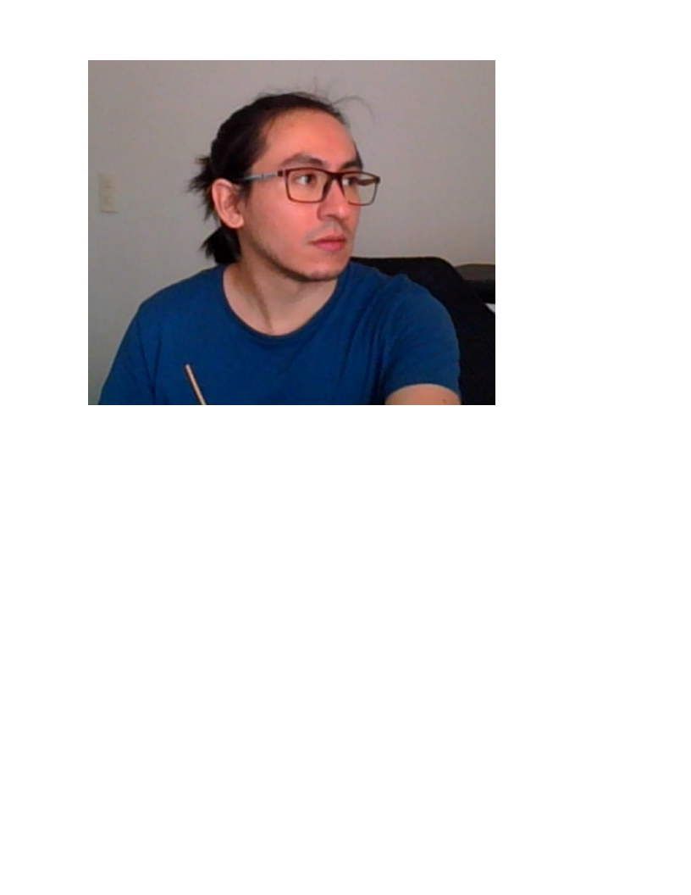

| Project | Description |
|---|---|
| Week 02 | Second week exercises |
| Movimiento de formas 2D | Una bola que rebota, al tocar el límite derecho, cambia el color, al tocar el límite izquierdo, cambia la velocidad, al tocar el límite inferior, cambia el radio y al tocar el límite superior, cambia la profundidad (indice z). Hay dos intervalos, uno para actualizar la posición de la bola y otro para realizar una copia y preservar ese estado en pantalla. Por hacer: detener la ejecución y modificar dinámicamente los intervalos, Video demostración |